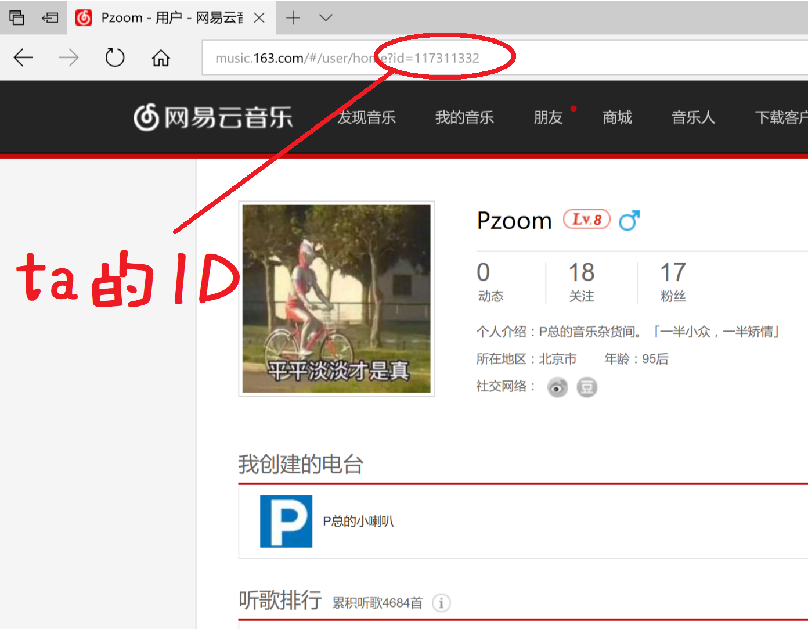

如下图，ta的ID可在网易云音乐网页版寻找~
几点说明:
0)copyright:P总@北航BUAA
1)如果对方进行了隐私设置，不让别人看听歌排行，我也不会帮你偷看
2)因为服务器垃圾(AWS免费试用的EC2)，请尽可能善待我们，包括不要反复提交ID、不要提交非法请求等
3)由于上述原因，加上网易云音乐丧心病狂地反爬虫，一般来说大家的请求需要排队处理(0.5+)，请保持耐心。。。
4)如果发现bug，或者发现服务器GG了，或者看到其它了不起的东西，请电邮admin@pzoomspace.cn
5)了解一个人是走近ta的第一步。但是尊重一个人是走近ta的第零步: )
6)做了一些微小的工作。谢谢大家。